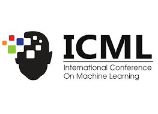

ISM: Self-Improving Strategy Memory for Continual Mathematical Reasoning
A strategy memory that learns from successful and failed episodes to improve mathematical reasoning with a frozen language model. Evaluated on MATH-Hard and OlympiadBench.